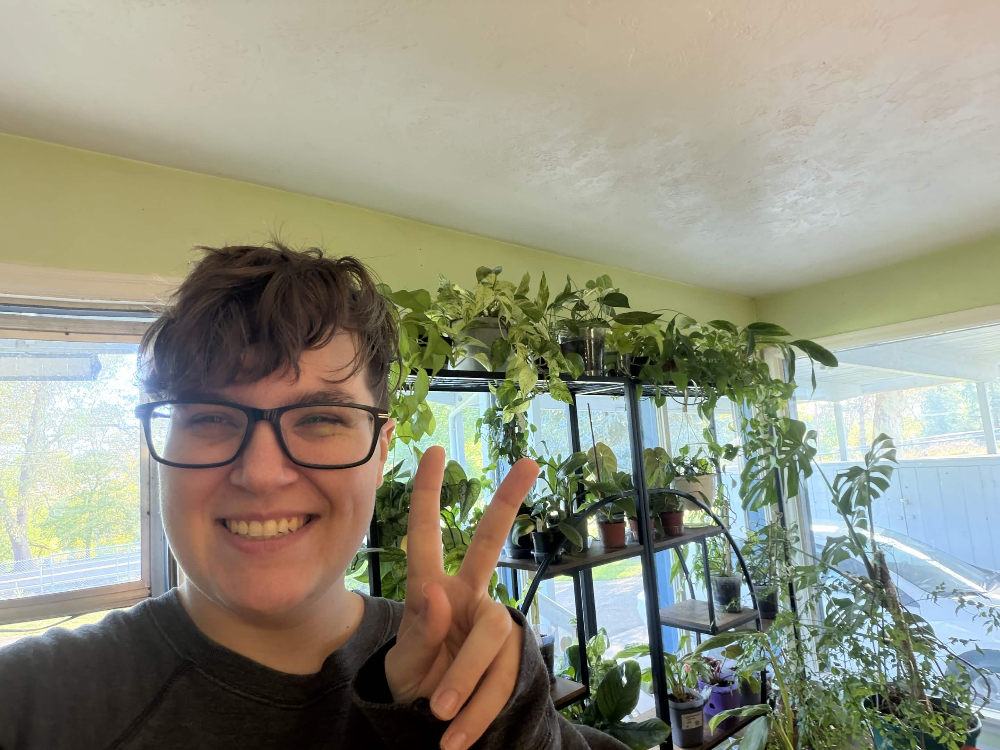
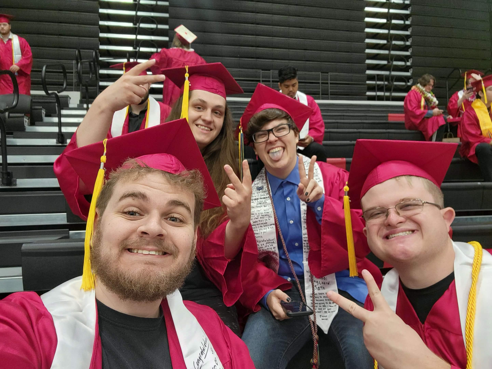
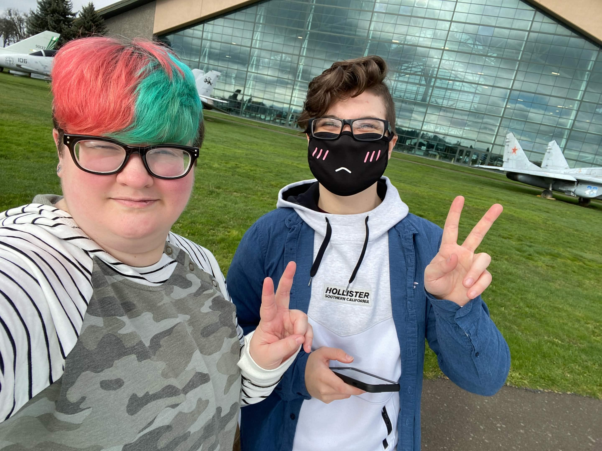
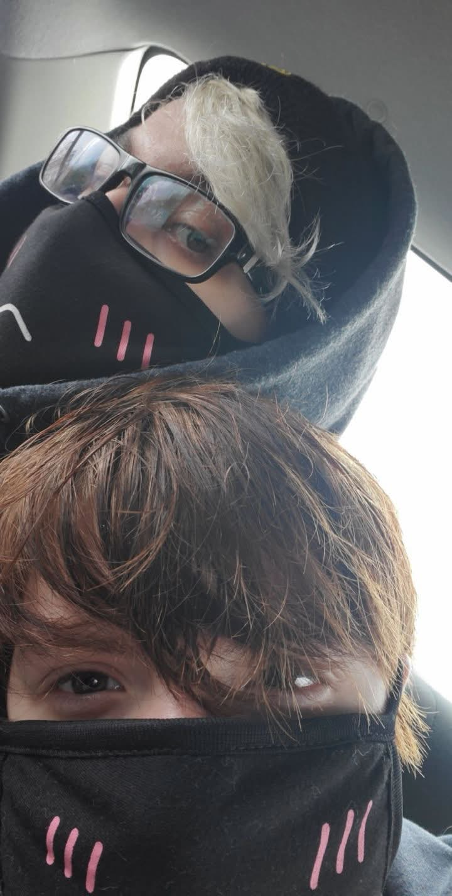
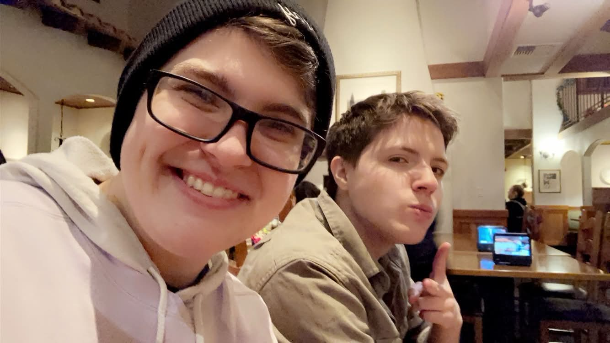
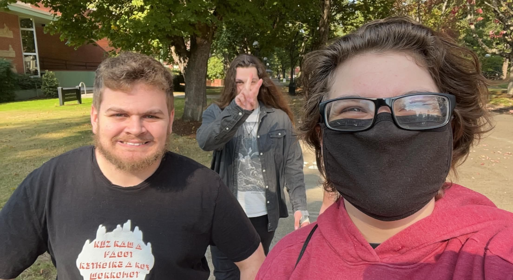

A little introduction
About me
The person behind the projects.
life keeps on






Why, Hello there
I'm Jasper.
I graduated from an accredited university with a bachelor's degree in Computer Science. That was in 2023. The boom of generative AI earlier that year destroyed any chance I had at being a software engineer or digital artist.
I applied to nearly a thousand jobs over two years after I graduated but didn't get any offers. Less than 10 percent of those applications even sent me a rejection. I ended up finding a retail position locally through a personal network. A job I never wanted. A job I knew even as a teenager would drain my life of its force. And it has.
I've been so tired for the last year. It feels hopeless even trying to get a job in the tech industry.
In the back of my mind, I had been thinking about what I really wanted to do with my life. What would the ideal path forward be? This came to me in the middle of the night while my favorite content creator popped quietly into a microphone. I knew I liked ASMR a lot and loved creators on YouTube, so maybe... I could do it too.
Then I started saving for an ASMR setup as an attempt to create my own content. I'd focus on creating content that brings joy to myself and others. The only problem for some time was the lack of an editor. I was going to do it myself but I have no formal training. Luckily, a friend of mine was also looking to start internet content and we started chatting at a good time.
He needed a website and I needed an editor. So we made an exchange. I make and maintain a website for him, and he edits videos for my new ASMR channel.
A quote from a girl I love:
"If you keep at it, the only thing between you and your dream is time."
The site you're on now is where I collect the projects and creative work I want to share.
Thank you for taking the time to learn a bit about me.
Explore my work